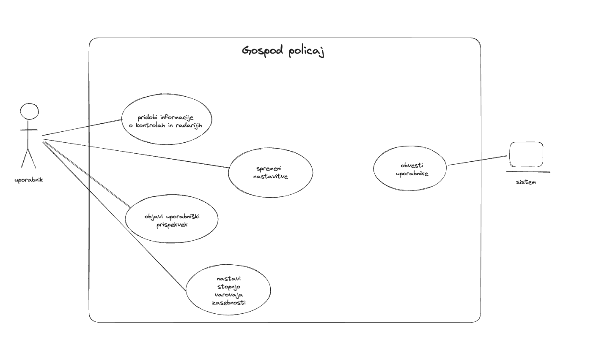

Funkcionalnost odjemalca
Nabor funkcionalnosti
- Obveščanje o policijskih kontrolah: Uporabnike obvešča o lokacijah, kjer potekajo policijske kontrole, s podrobnostmi o datumu, času in vrsti kontrole. To jim omogoča, da se izognejo morebitnim kaznim in vozijo varno ter odgovorno.
- Informacije o radarjih: Aplikacija ponuja informacije o lokacijah radarjev za merjenje hitrosti, kar voznikom omogoča prilagajanje hitrosti in zmanjšanje tveganja za prekoračitev hitrosti.
- Uporabniški prispevki: Uporabniki lahko delijo svoje izkušnje in opažanja o policijskih kontrolah ter radarjih, kar prispeva k skupni bazi podatkov in izboljšanju informacij za vse uporabnike.
- Personalizirane nastavitve: Aplikacija omogoča prilagajanje obvestil glede na individualne preference uporabnika, kar zagotavlja bolj relevantne informacije in izboljšano uporabniško izkušnjo.
- Varovanje zasebnosti: Zagotovljeno je varovanje zasebnosti uporabnikov in njihovih podatkov, s čimer se zagotavlja zaupnost in zaščita osebnih informacij.
UML - Use Case Diagram
